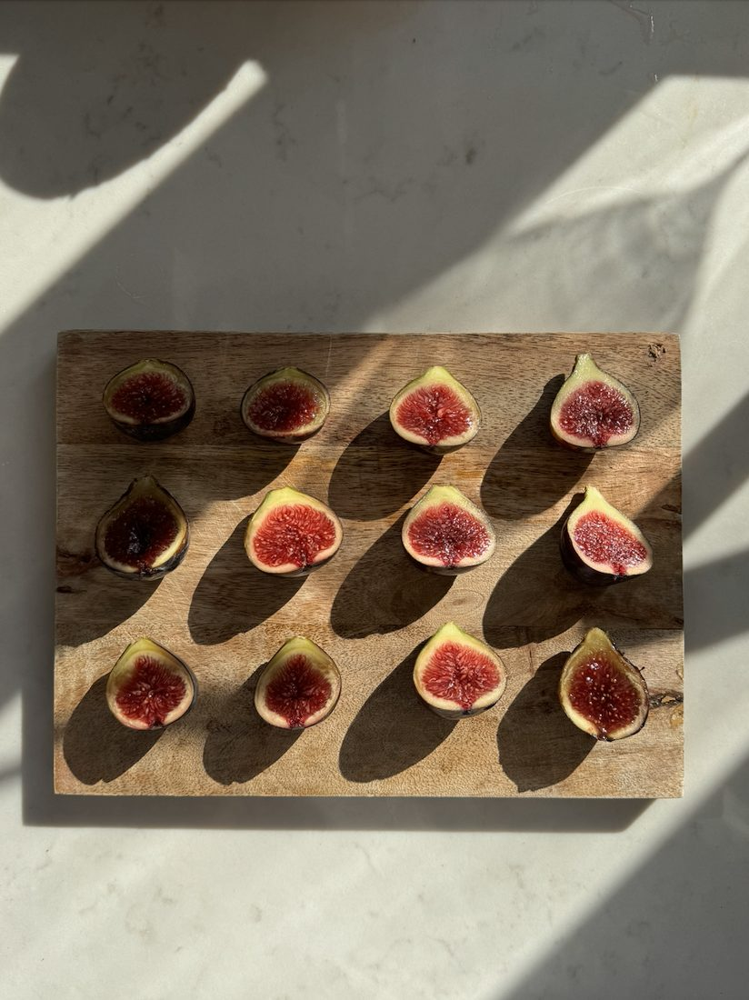
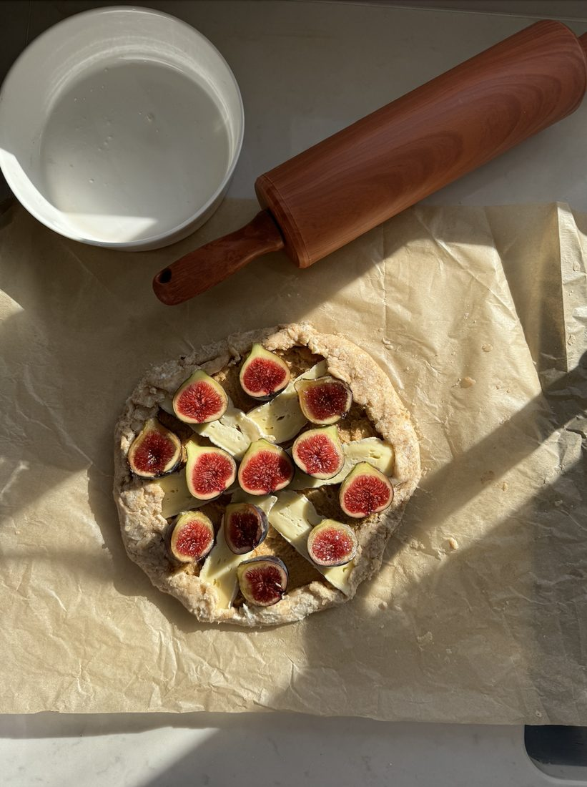
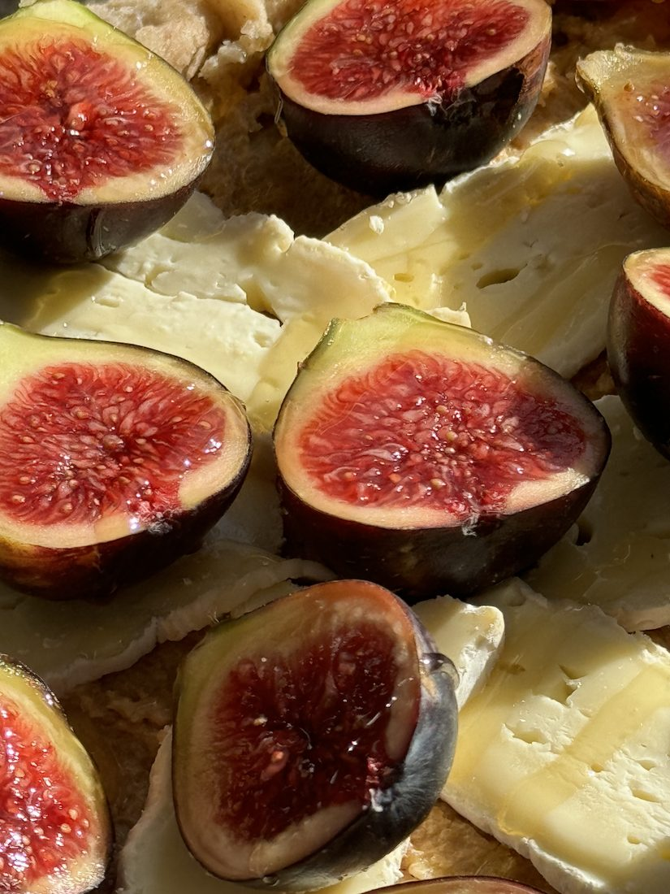

FIGS, FIGS, FIGS + galette recipe
22 Nov 2024 · Written by Chompak Koonnawarote
WHERE HAVE YOU BEEN ALL MY LIFE?!
I have a confession to make. I used to avoid figs because apparently they’ve got flies in them. Oh how I was missing out on one of the most delicious things in life! Don’t know what prompted me to have the courage to take a bite out of that first fig but so glad I did. That’s it. I’m a fig fan now.
Pictured below are the figs I got from Natoora. They’ve got the melt-in-your-mouth texture and serve as a great flavour combination to my Pont-l'Évêque galette. I’ve included the recipe for he galette below.




Galette dough
Yields one 8-10” galette
- 1 ⅓ cups (170g) plain flour
- 1 ½ tsp caster sugar
- 1/2 tsp salt
- 10 tablespoons (140g) cold unsalted butter, chopped
- 2 tablespoons ice cold water
- 1 tablespoon sour cream or greek yogurt
- Whisk together the flour, sugar, and salt in a large bowl. Cut the cold butter into ½ inch cubes, and add it to the bowl. Using your fingers and palms, incorporate the butter into the dry mixture, by squishing it throughout and creating long, flaky, floury, pea-sized pieces.
- Drizzle in the water, then add the sour cream/buttermilk/creme fraiche to the mix, and evenly distribute with your hands. Knead it a few times to bring it into a rough, shaggy mass of dough.
- Press the dough into a ½ -1 inch thick disc, wrap in plastic wrap, and refrigerate or freeze for at least an hour or two, while you prep the filling.
- Roll out dough to approximately 8-10”, top with fillings of your choice and gently fold in the edges.
- Brush with egg wash and sprinkle on Demerara sugar
- Bake at 185C for 23-25 minutes
Recipe from @finks.london